Crítica
Michael
Uma cinebiografia que encontra força ao olhar para o artista por trás do mito e transformar dor em permanência.
Ler críticaO THUCCINE reúne críticas de filmes, estreias e impressões autorais em um espaço pensado para acompanhar os lançamentos e transformar cada texto em parte de um portal vivo, organizado e com personalidade.
Ver críticas mais recentes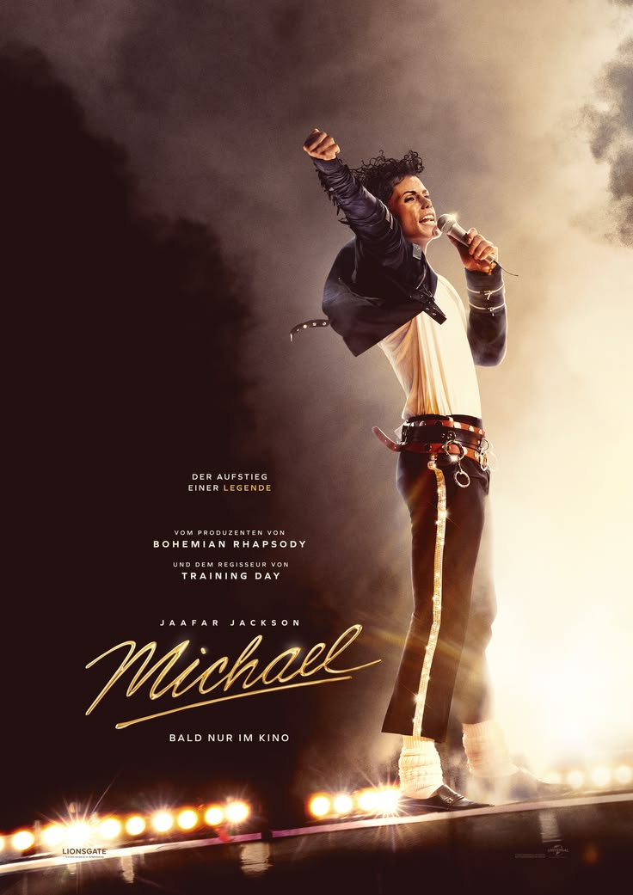
Uma cinebiografia que encontra sua força quando olha para o artista por trás do mito e transforma dor em permanência.
Ler críticaUma cinebiografia que encontra força ao olhar para o artista por trás do mito e transformar dor em permanência.
Ler crítica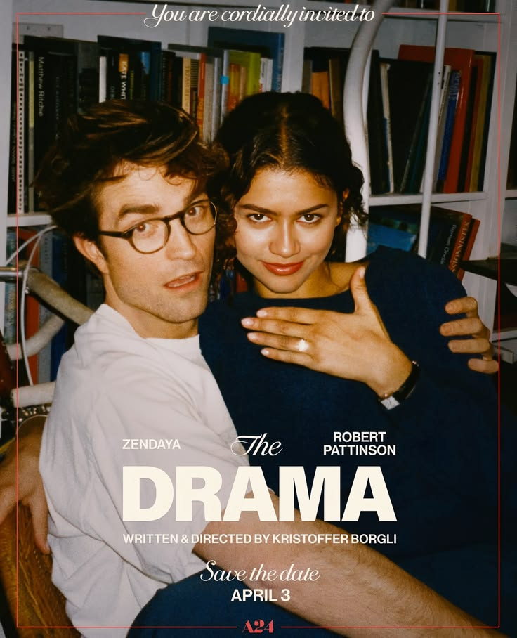
Uma crise amorosa transformada em delírio emocional, sustentada por atuações intensas e atmosfera instável.
Ler crítica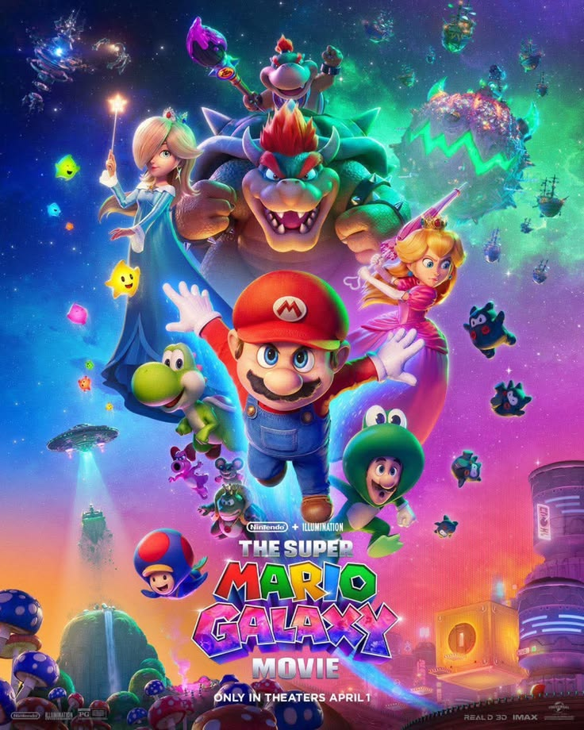
Uma continuação que cresce em escala, nostalgia e energia, transformando a aventura em puro espetáculo.
Ler críticaUma cinebiografia que encontra força ao olhar para o artista por trás do mito e transformar dor em permanência.
Ler críticaUma crise amorosa transformada em delírio emocional, sustentada por atuações intensas e atmosfera instável.
Ler críticaUma continuação que cresce em escala, nostalgia e energia, transformando a aventura em puro espetáculo.
Ler crítica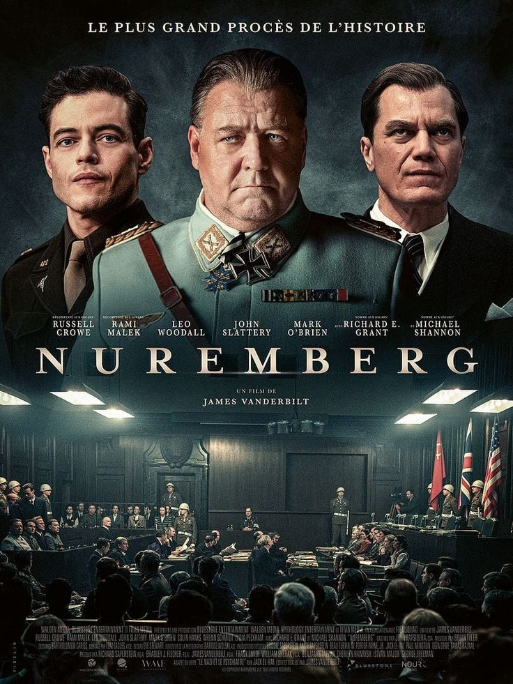
Um tribunal transformado em campo de batalha moral, sustentado por tensão, palavras e responsabilidade histórica.
Ler críticaUm romance sobre recomeços que funciona na estrutura, mas perde força na química e na escalação.
Ler crítica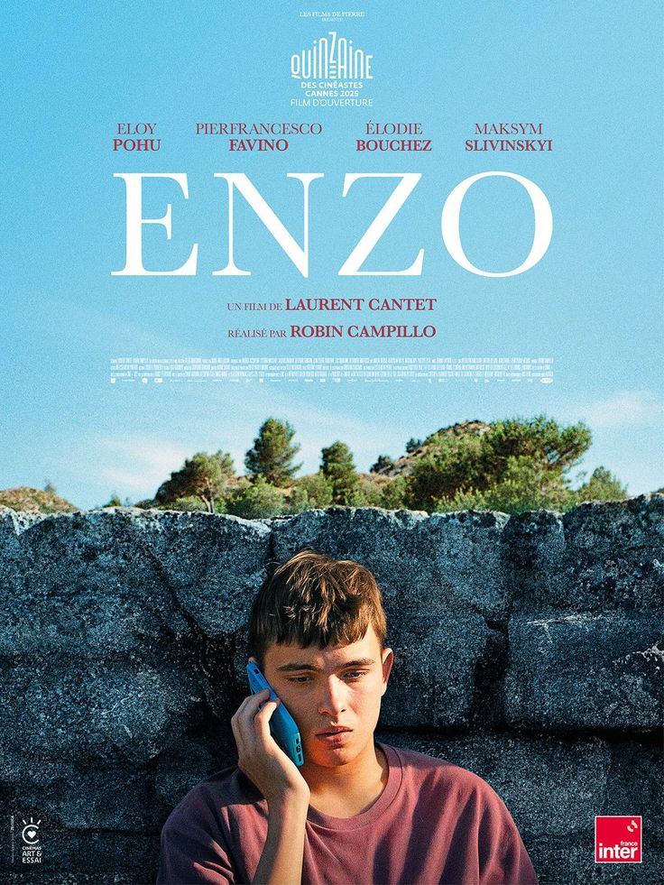
Uma proposta curiosa e diferente, mas que se enfraquece por escolhas pouco convincentes e falta de direção.
Ler crítica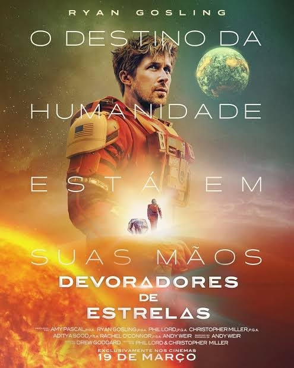
Uma ficção científica grandiosa que encontra sua força maior na amizade e na delicadeza emocional.
Ler crítica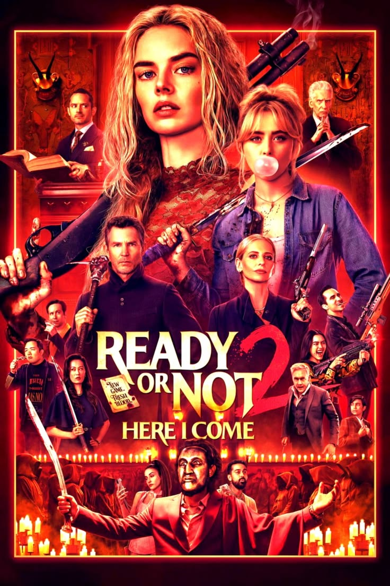
Mais brutal e mais intenso, ainda que enfraquecido por conflitos repetitivos e algumas incoerências.
Ler crítica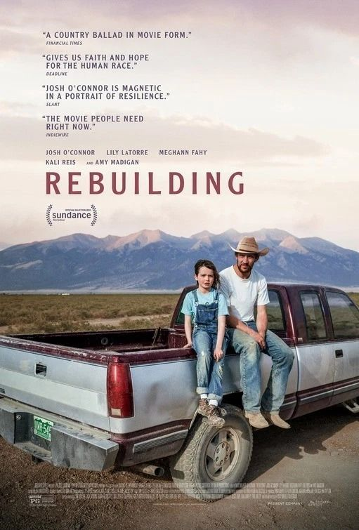
Um drama sensível e visualmente bonito, com ótimas atuações, mas limitado por um roteiro estagnado.
Ler crítica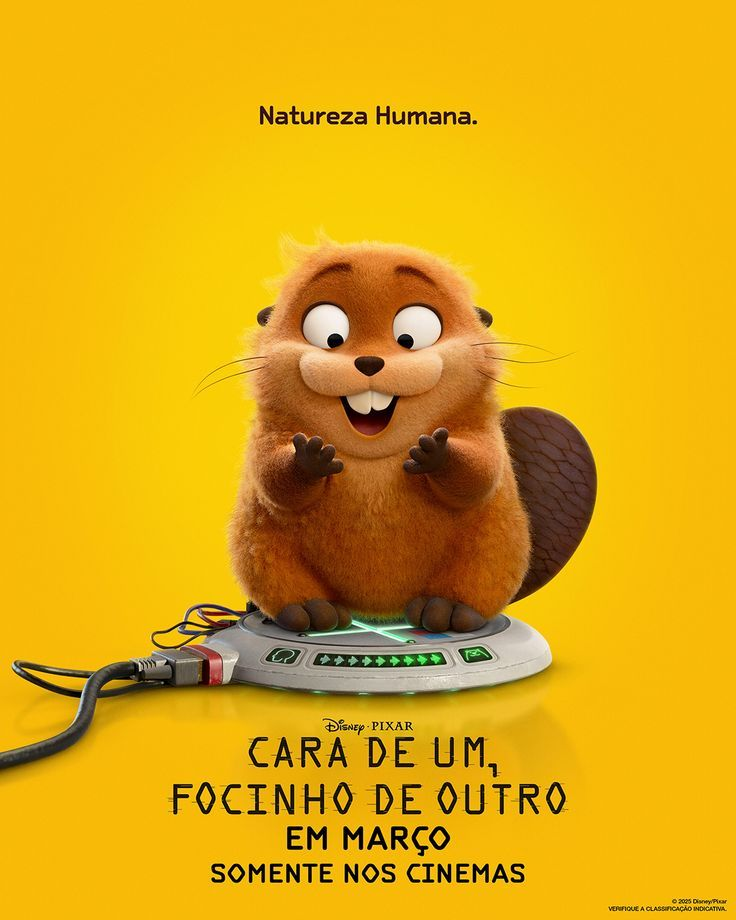
Uma animação charmosa, engraçada e emocional, que diverte enquanto reflete sobre escolhas e humanidade.
Ler crítica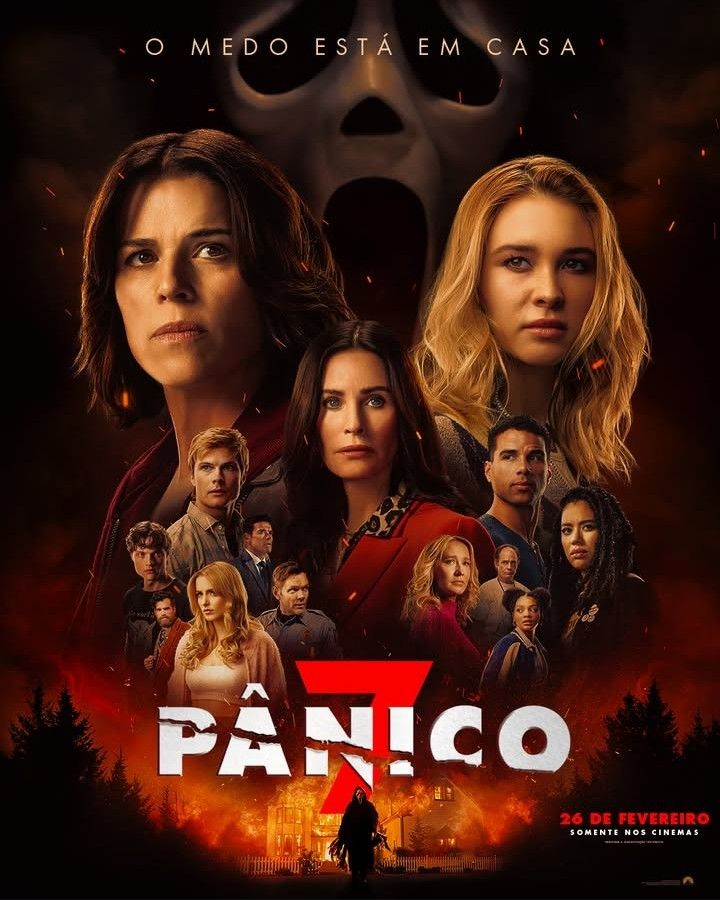
Suspense, nostalgia e manipulação bem conduzidos, mesmo com uma revelação final mais fraca do que deveria.
Ler crítica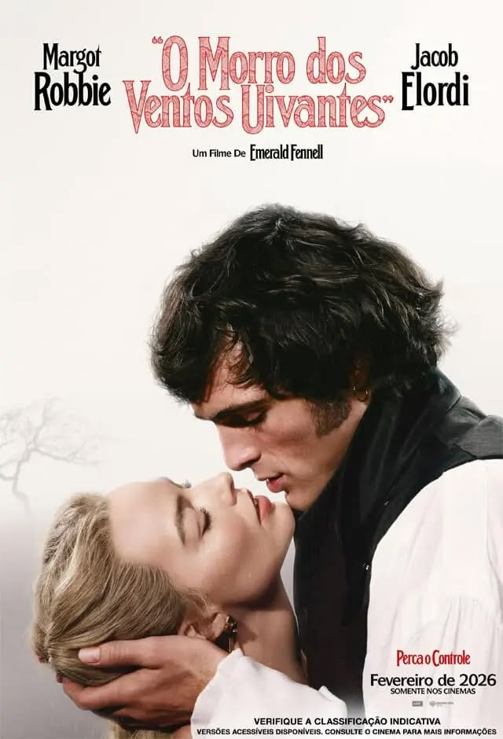
Uma adaptação visualmente arrebatadora e emocionalmente intensa, embora por vezes excessiva em seu drama.
Ler crítica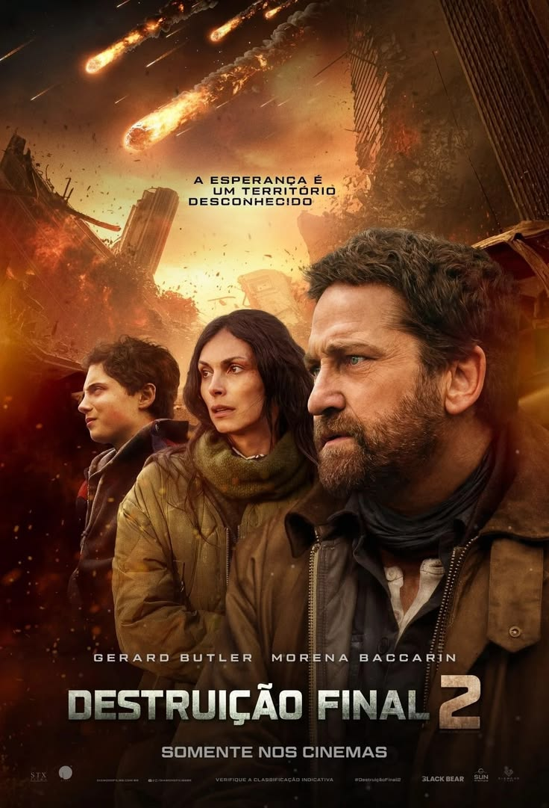
Uma continuação válida e reflexiva, mas sem a mesma força dramática, ação e impacto do primeiro filme.
Ler crítica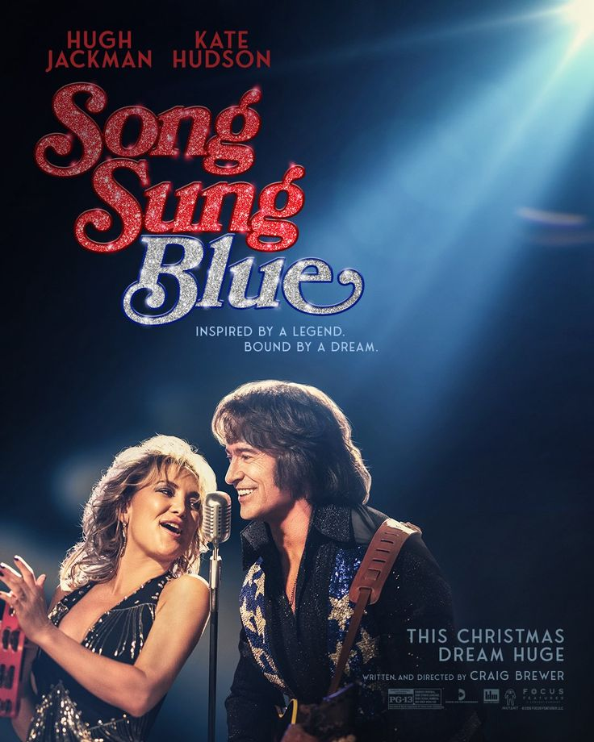
Um romance tocante sobre música, superação e apoio mútuo, conduzido por atuações sensíveis e envolventes.
Ler crítica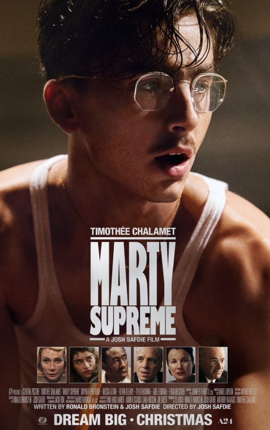
Um retrato intenso sobre ambição, obsessão e limites pessoais, sustentado por ritmo firme e atuações fortes.
Ler críticaO THUCCINE nasceu para ser mais do que um perfil sobre filmes. A ideia é construir um portal com identidade própria, acompanhando estreias e reunindo críticas em ordem de lançamento, como um arquivo vivo de tudo o que vai chegando aos cinemas.